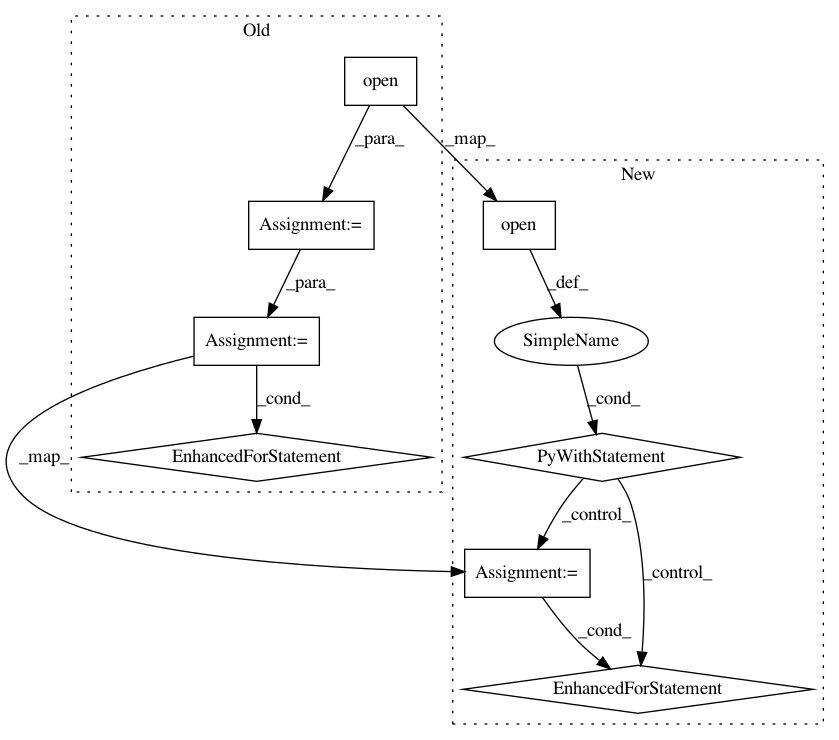

4b674552c6755a5b154927b0cf86aa4812729ec4,examples/most_common_word_sense/prepare_data.py,,read_inference_input_examples_file,#Any#,85
Before Change
list(str): target word vector
file = codecs.open(input_examples_file, "rU", "utf-8")
reader = csv.reader((line.replace("\0", "") for line in file))
cntr2 = 0
// 1. read csv file
target_word_vec1 = []
header_line_flag = True
for line in reader:
if line is not None:
if header_line_flag: // skip header line
header_line_flag = False
continue
target_word_vec1.insert(cntr2, line[0])
cntr2 = cntr2 + 1
file.close()
return target_word_vec1
After Change
list(str): target word vector
with open(input_examples_file, "rU", encoding="utf-8") as file:
reader = csv.reader((line.replace("\0", "") for line in file))
cntr2 = 0
// 1. read csv file
target_word_vec1 = []
header_line_flag = True
for line in reader:
if line is not None:
if header_line_flag: // skip header line
header_line_flag = False
continue
target_word_vec1.insert(cntr2, line[0])
cntr2 = cntr2 + 1
return target_word_vec1
if __name__ == "__main__":
In pattern: SUPERPATTERN
Frequency: 3
Non-data size: 8
Instances
Project Name: NervanaSystems/nlp-architect
Commit Name: 4b674552c6755a5b154927b0cf86aa4812729ec4
Time: 2018-05-14
Author: daniel.korat@intel.com
File Name: examples/most_common_word_sense/prepare_data.py
Class Name:
Method Name: read_inference_input_examples_file
Project Name: NervanaSystems/nlp-architect
Commit Name: 075f154b507e7b87384ccd0956566e6af37417a0
Time: 2018-05-15
Author: 32893314+danielkorat@users.noreply.github.com
File Name: examples/reading_comprehension/utils.py
Class Name:
Method Name: create_squad_training
Project Name: NervanaSystems/nlp-architect
Commit Name: 5bb1355742085384c4c5ccbbd9a774b06e774e32
Time: 2018-07-18
Author: sharath.nittur.sridhar@intel.com
File Name: examples/reading_comprehension/utils.py
Class Name:
Method Name: create_squad_training